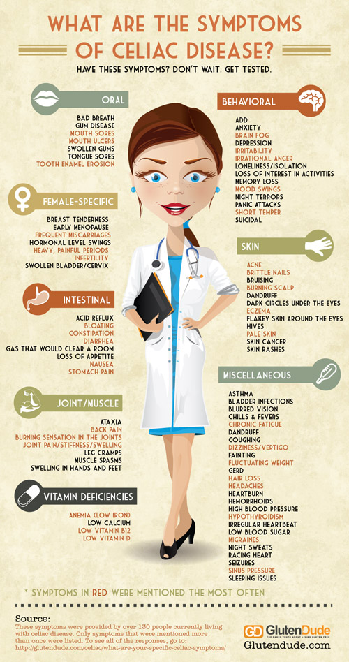

Celiac Disease is a genetic autoimmune disorder. When a person with Celiac Disease eats food containing or contaminated with gluten, a protein found in wheat, barley, and rye, their body triggers an immune response that attacks their small intestine. A healthy small intestine has millions of fingerlike projections called villi which help the body absorb nutrients. When someone with Celiac Disease eats gluten, their body will damage or destroy these villi, meaning that the body is unable to absorb nutrients properly. While Celiac Disease is genetic, not all people with the genes actually express the disorder; researchers do not yet know why this is. To read more about Celiac Disease in the scientific literature, follow the links below.
To learn more about Celiac Disease, visit Celiac.org or Coeliac.org.uk. (Note: Celiac and Coeliac Disease are the same thing, simply the American and British spellings, respectively.)
Celiac Disease can manifest itself in a wide variety of symptoms. Not every patient with celiac disease suffers the same symptoms, which sometimes can make the disease difficult to diagnose. Below are some common symptoms for children and others for adults.
The symptoms found in children and infants are most often related to the digestive system. Here are some signs to look for:
Adults often do not experience the same digestive symptoms. Here are some other signs to look for:
Celiac Disease can manifest itself at any age, so if you begin to experience any of these symptoms, it is worth talking to your doctor.
It has also been found that Hepatitis B vaccines given to people with undiagnosed Celiac Disease often do not work properly. If you suspect that you had Celiac Disease when you received this vaccine, you may need to be revaccinated. Your doctor can do a simple blood test to see if your vaccine worked.
There are two stages of testing for Celiac Disease. First, there is a simple blood test to test for the antibodies associated with Celiac Disease. These are the antibodies produced by the immune system when triggered by gluten that attack the villi in the small intestine. These tests, however, are unfortunately not always reliable, sometimes producing either false negatives or false positives. The only way to conclusively test for Celiac Disease is with an endoscopic biopsy of the small intestine. In order to undergo this test, a patient must eat gluten consistently for at least six to eight weeks. Doctors can then look at the biopsy, and the villi in the small intestine to determine whether the patient has Celiac Disease.
The only treatment for Celiac Disease is following a strict gluten free diet. However, once on a gluten free diet, symptoms should improve but the time it takes for the gut to heal varies from person to person. Doctors say it can take three to six months for the gut to fully recover. It's also important to note that even a crumb can sometimes be enough to trigger the immune response associated with celiac disease, meaning that cheating on the gluten free diet is not an option.
It is important to adhere to a strict gluten free diet, because there are serious long term affect associated with untreated celiac disease. These include:
There is a significant difference between Celiac Disease and non-Celiac gluten sensitivity; the two should not be confused. Celiac Disease is a well defined, serious autoimmune disorder. It is not the same as an allergy or intolerance. Non-Celiac gluten sensitivity is when symptoms similar to coeliac disease are experienced, but there are no associated antibodies and no damage to the lining of the gut. The terms non-celiac gluten sensitivity (NCGS) and non-celiac wheat sensitivity (NCWS) are generally used to refer to this condition. A wheat allergy is a reaction to proteins found in wheat, triggered by the immune system and usually occurs within seconds or minutes of eating. Removing gluten from your diet can help relieve the symptoms of glute intolerance, however, it is not medically recommended to do this without talking to your doctor, because of other health effects this can cause. If you suspect you have an intolerance or worry that you may have Celiac Disease, you should see your doctor and discuss the best course of action. Remember that in order to be tested for Celiac Disease, you must be eating gluten regularly.
When you travel, it is common to eat many meals at restaurants. If you have celiac disease, and you are traveling in a country where people do not speak your native language, it can be helpful to bring translation cards that describe celiac disease in the local language.
Websites such as CeliacTravel.com or TriumphDining.com provide translations of a description of celiac disease and a gluten free diet in many different languages. Below is a sample of the many languages available: